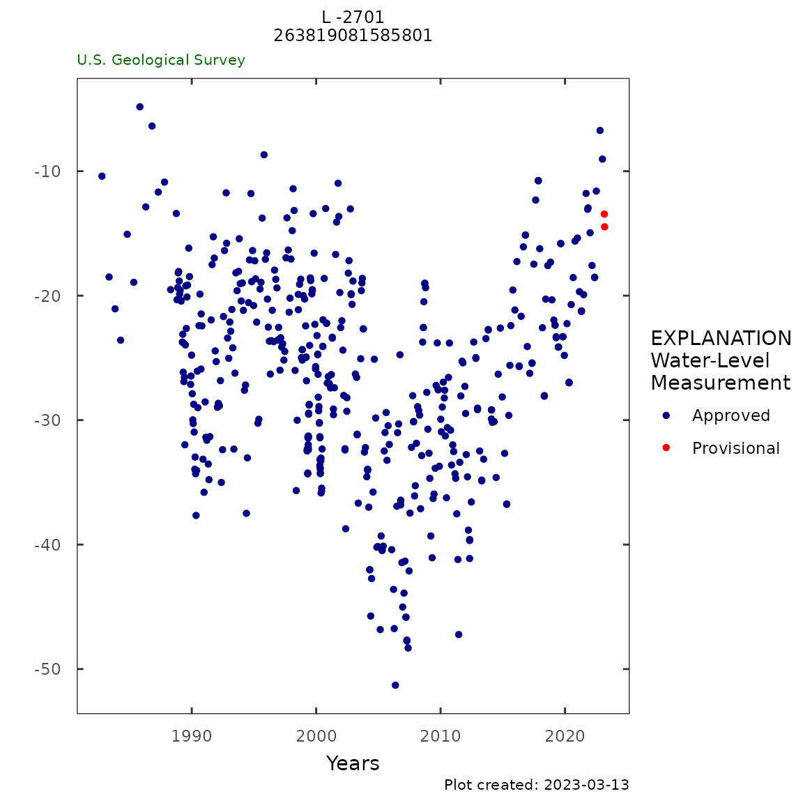
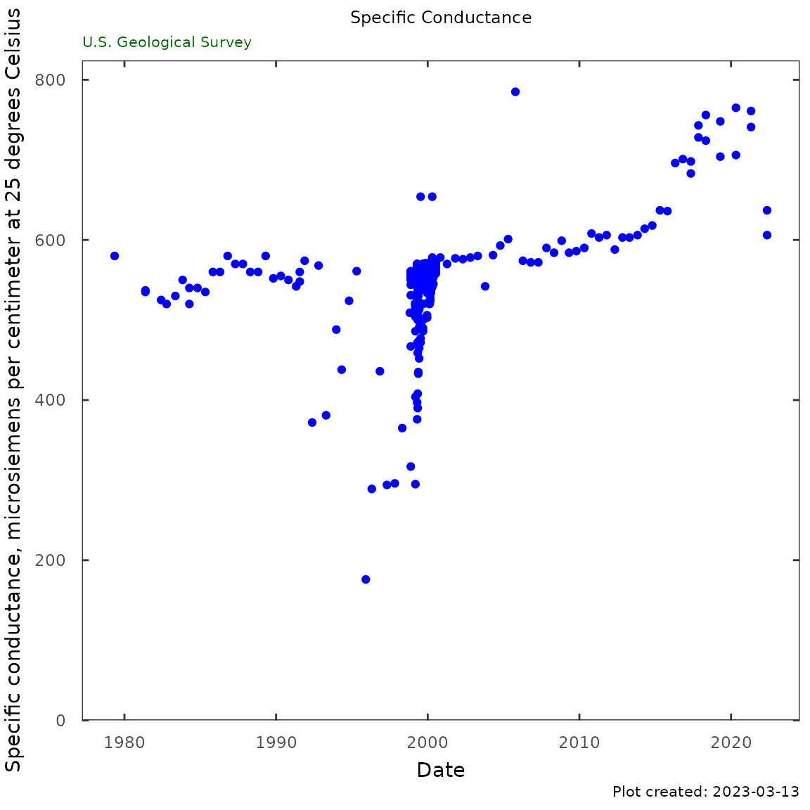

Single Site Data Availability
Single_site_combo_data.RmdThis vignette shows how to use HASP and other R tools to reproduce:
https://fl.water.usgs.gov/mapper/site_info.php?site=263819081585801&stationType=gw
This page merges information from USGS Groundwater Watch website and USGS Water Science Centers.
Site Information
library(HASP)
siteID <- "263819081585801"
site_metadata <- site_summary(siteID, markdown = TRUE)263819081585801 L -2701
Latitude: 26 deg 38 ’ 19 "
Longitude: 81 deg 58 ’ 58 "
Lee County , Florida
Hydrologic Unit: 03090205
Well depth: 206 feet
Land surface altitude: 13 feet above NGVD29
Well completed in : “Intermediate aquifer system” (S500INTRMD) national aquifer.
Well completed in : “Hawthorn Limestone Aquifer” (122HTRNN) local aquifer.
data_info <- data_available(siteID)
kable(data_info)| Data Type | Begin Date | End Date | Count |
|---|---|---|---|
| Water-Year Summary | 2006-01-01 | 2021-01-01 | 16 |
| 1978-01-01 | 2021-01-01 | 15205 | |
| Daily Data | |||
| Groundwater level above NGVD 1929, feet | 1978-10-01 | 2022-07-07 | 15301 |
| Groundwater level above NAVD 1988, feet | 2019-09-07 | 2022-07-07 | 1035 |
| Field/Lab water-quality samples | 1978-09-06 | 2022-05-18 | 472 |
| Current / Historical Observations | 2007-10-01 | 2022-07-08 |
Get data using dataRetrieval
Using dataRetrieval code to get the data for this site:
library(dataRetrieval)
siteID <- "263819081585801"
parameterCd <- "62610"
statCd <- "00001"
# Daily data:
gw_level_dv <- readNWISdv(siteID,
parameterCd,
statCd = statCd)
# Field measured:
gwl_data <- readNWISgwl(siteID)
# Water quality data:
cl_sc <- c("Chloride", "Specific conductance")
qw_data <- readWQPqw(siteNumbers = paste0("USGS-", siteID),
parameterCd = cl_sc)
plot_title <- "L -2701\n263819081585801"
y_label <- dataRetrieval::readNWISpCode(parameterCd)$parameter_nm Groundwater Data
Monthly Frequency
monthly_frequency_plot(gw_level_dv,
gwl_data = gwl_data,
parameter_cd = parameterCd,
y_axis_label = y_label,
plot_title = plot_title,
plot_range = "Past year")
monthly_freq_table <- monthly_frequency_table(gw_level_dv,
gwl_data,
parameter_cd = parameterCd)
kable(monthly_freq_table, digits = 1)| month | p05 | p10 | p25 | p50 | p75 | p90 | p95 | nYears | minMed | maxMed |
|---|---|---|---|---|---|---|---|---|---|---|
| 1 | -38.4 | -32.3 | -29.5 | -21.5 | -17.7 | -12.9 | -7.0 | 44 | -41.8 | -5.7 |
| 2 | -41.0 | -32.6 | -29.1 | -22.0 | -19.0 | -12.6 | -7.6 | 44 | -42.9 | -7.2 |
| 3 | -41.4 | -36.2 | -30.0 | -23.6 | -19.9 | -11.0 | -7.7 | 44 | -45.2 | -6.9 |
| 4 | -45.2 | -39.1 | -31.9 | -25.9 | -22.0 | -16.8 | -10.2 | 44 | -48.4 | -9.4 |
| 5 | -46.1 | -39.9 | -34.1 | -27.7 | -23.3 | -18.1 | -14.2 | 44 | -49.4 | -10.0 |
| 6 | -41.8 | -38.6 | -32.4 | -27.8 | -21.6 | -15.4 | -13.7 | 43 | -42.8 | -11.0 |
| 7 | -34.5 | -31.2 | -25.9 | -20.0 | -17.3 | -14.0 | -10.8 | 44 | -37.5 | -6.8 |
| 8 | -28.0 | -27.6 | -23.1 | -17.3 | -14.0 | -12.3 | -9.3 | 43 | -32.4 | -4.8 |
| 9 | -29.0 | -24.1 | -19.0 | -15.9 | -12.7 | -9.5 | -6.4 | 42 | -32.7 | -3.2 |
| 10 | -29.2 | -28.5 | -21.8 | -16.3 | -13.2 | -9.7 | -5.5 | 44 | -36.2 | -4.8 |
| 11 | -36.3 | -31.9 | -25.8 | -20.4 | -15.2 | -10.7 | -6.9 | 44 | -41.4 | -4.5 |
| 12 | -37.8 | -32.5 | -27.5 | -21.8 | -16.7 | -12.0 | -8.5 | 44 | -42.5 | -4.9 |
Daily 2 year plot
daily_gwl_plot(gw_level_dv,
gwl_data,
parameter_cd = parameterCd,
plot_title = plot_title,
month_breaks = TRUE,
historical_stat = "median",
y_axis_label = y_label)
daily_summary_table <- daily_gwl_summary(gw_level_dv,
gwl_data,
parameter_cd = parameterCd) %>%
select("Begin Date" = begin_date,
"End Date" = end_date,
"Days" = days,
"% Complete" = percent_complete,
"Lowest Level" = lowest_level,
"25th" = p25,
"50th" = p50,
"75th" = p75,
"Highest Level" = highest_level)
kable(t(daily_summary_table))| Begin Date | 1978-10-01 |
| End Date | 2022-07-08 |
| Days | 15767 |
| % Complete | 99 |
| Lowest Level | -51.3 |
| 25th | -28.21 |
| 50th | -21.71 |
| 75th | -16.72 |
| Highest Level | -2.81 |
Field Groundwater Level Data
gwl_plot_field(gwl_data,
parameter_cd = parameterCd,
plot_title = plot_title,
flip = FALSE)
siteField <- gwl_data %>%
rename(value = sl_lev_va) %>%
site_data_summary()
kable(siteField, digits = 1)| site | min_site | max_site | mean_site | p10 | p25 | p50 | p75 | p90 | count |
|---|---|---|---|---|---|---|---|---|---|
| 263819081585801 | -52.4 | -4.8 | -26.9 | -36.9 | -32.5 | -26.2 | -20.7 | -17.1 | 1398 |
Period of Record - All Data Types
y_label <- dataRetrieval::readNWISpCode(parameterCd)$parameter_nm
gwl_plot_all(gw_level_dv,
gwl_data,
y_label = y_label,
plot_title = plot_title,
parameter_cd = parameterCd,
flip = FALSE)
siteDaily <- gw_level_dv %>%
rename(value = X_62610_00001) %>%
site_data_summary() %>%
select(Minimum = min_site,
`1st` = p25,
Median = p50,
Mean = mean_site,
`3rd` = p75,
Maximum = max_site)
kable(siteDaily, digits = 1)| Minimum | 1st | Median | Mean | 3rd | Maximum |
|---|---|---|---|---|---|
| -51.1 | -28 | -21.6 | -22.5 | -16.6 | -2.8 |
Salinity Data and Analysis
Chloride
qw_plot(qw_data, plot_title = plot_title)
cl_trend <- trend_test(NULL,
gwl_data = dplyr::filter(qw_data,
CharacteristicName == "Chloride"),
approved_col = "ResultStatusIdentifier",
date_col = "ActivityStartDateTime",
value_col = "ResultMeasureValue")
kable(cl_trend, digits = 3)| test | tau | pValue | slope | intercept | trend |
|---|---|---|---|---|---|
| 10-year trend | 0.838 | 0 | 6.521 | -13071.910 | Up |
| Period of record | 0.483 | 0 | 0.647 | -1237.109 | Up |
chl_table <- qw_summary(qw_data,
CharacteristicName = "Chloride",
norm_range = c(225,999))
kable(chl_table)| Analysis | Result |
|---|---|
| Date of first sample | 1978-09-06 |
| First sample result (mg/l) | 52 |
| Date of last sample | 2022-05-18 |
| Last sample result (mg/l) | 72 |
| Date of first sample within 225 to 999 mg/l | |
| Date of first sample with 1000 mg/l or greater | |
| Minimum (mg/l) | 14 |
| Maximum (mg/l) | 119 |
| Mean (mg/l) | 60.9 |
| First quartile (mg/l) | 54 |
| Median (mg/l) | 58 |
| Third quartile (mg/l) | 68 |
| Number of samples | 81 |
Specific Conductance
qw_plot(qw_data, "Specific Conductance",
CharacteristicName = "Specific conductance")
sc_table <- qw_summary(qw_data,
CharacteristicName = "Specific conductance",
norm_range = NA)
kable(sc_table)| Analysis | Result |
|---|---|
| Date of first sample | 1979-05-09 |
| First sample result (uS/cm @25C) | 580 |
| Date of last sample | 2022-05-18 |
| Last sample result (uS/cm @25C) | 606 |
| Minimum (uS/cm @25C) | 176 |
| Maximum (uS/cm @25C) | 785 |
| Mean (uS/cm @25C) | 553 |
| First quartile (uS/cm @25C) | 544 |
| Median (uS/cm @25C) | 560 |
| Third quartile (uS/cm @25C) | 569 |
| Number of samples | 394 |
Specific Conductance vs Chloride
Sc_Cl_plot(qw_data, plot_title = plot_title)
sc_cl <- Sc_Cl_table(qw_data)
# only show 10 row:
kable(head(sc_cl, 10),
col.names = c("Date",
"Chloride [mg/L]",
"Specific conductance [µS/L]"))| Date | Chloride [mg/L] | Specific conductance [µS/L] |
|---|---|---|
| 1978-09-06 20:30:00 | 52 | |
| 1979-05-09 19:00:00 | 50 | 580 |
| 1981-05-20 18:15:00 | 54 | 536 |
| 1982-10-12 13:15:00 | 52 | 520 |
| 1982-06-03 13:30:00 | 60 | 525 |
| 1999-04-21 13:25:00 | 569 | |
| 2000-04-03 20:01:00 | 572 | |
| 1983-05-11 15:50:00 | 54 | 530 |
| 1984-10-24 14:05:00 | 54 | 540 |
| 2000-06-06 20:08:00 | 570 |